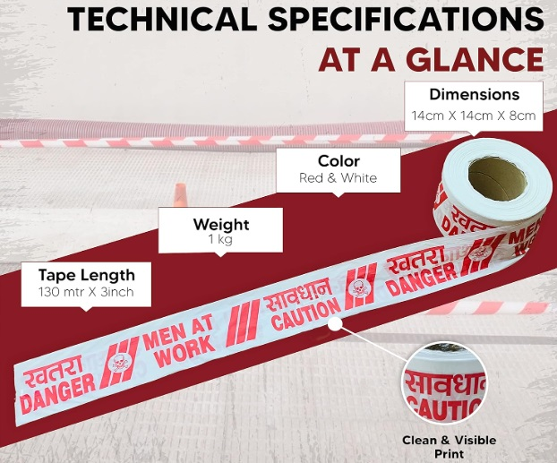
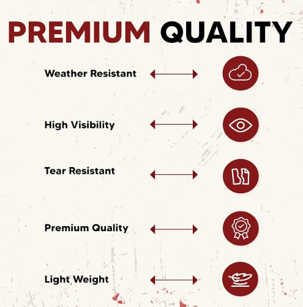
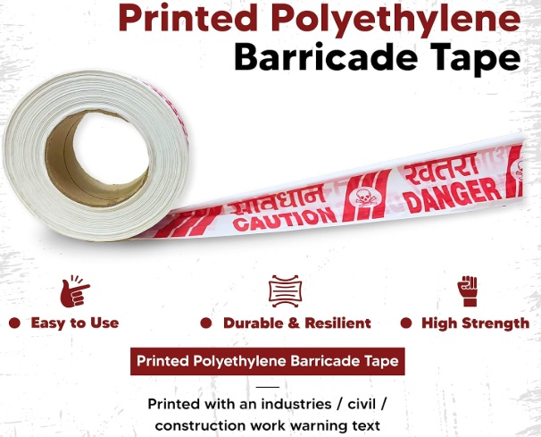
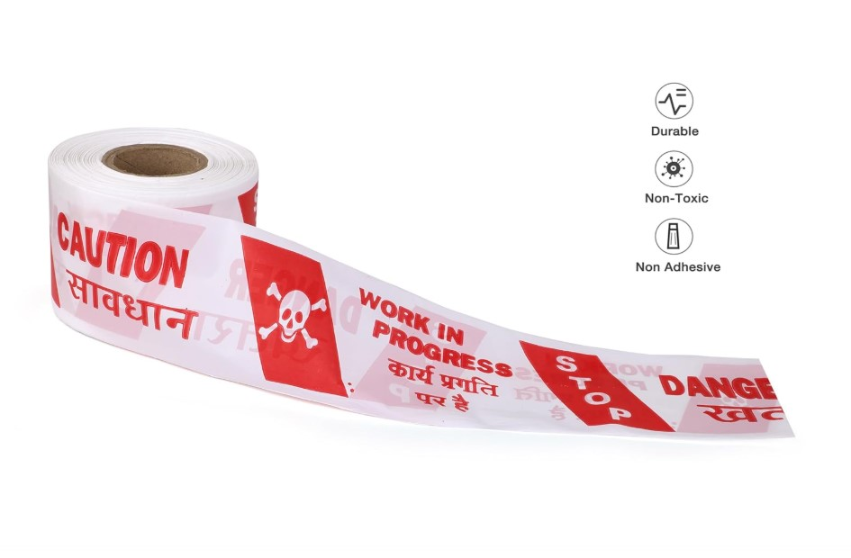

High-visibility warning tapes designed to clearly mark hazardous, restricted, or controlled areas for improved safety and awareness.





Caution Tape is used to provide a clear visual warning and restrict access to potentially dangerous or controlled areas. Printed with bold caution messages and high-contrast colours, these tapes help improve workplace safety and prevent unauthorized entry.
Lightweight and easy to deploy, caution tapes are commonly used across Indian industrial sites, construction zones, public spaces, and maintenance activities where temporary safety marking is required.
For Indian outdoor conditions, brighter colour combinations are recommended for visibility in dust, rain, and low-light situations. Caution tape is intended for temporary use and should not replace permanent floor marking solutions.